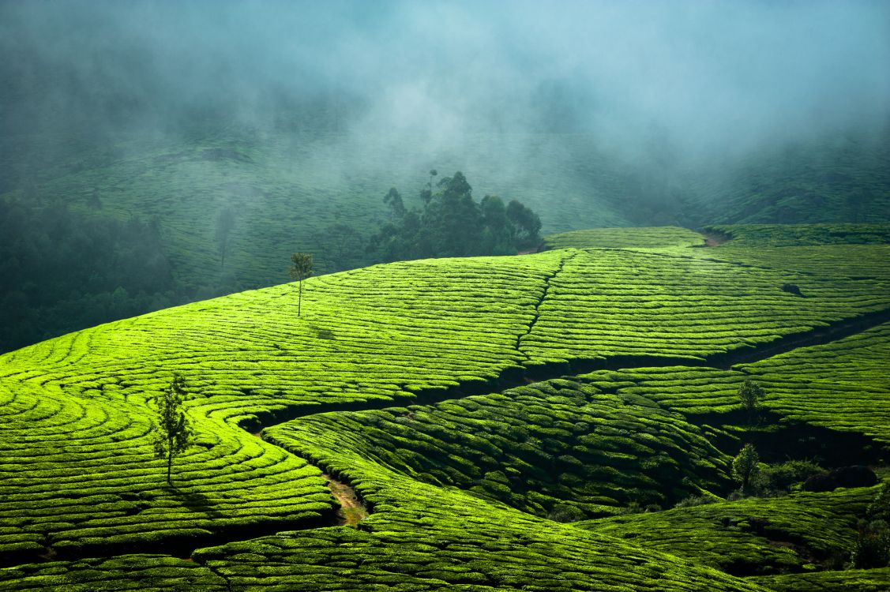
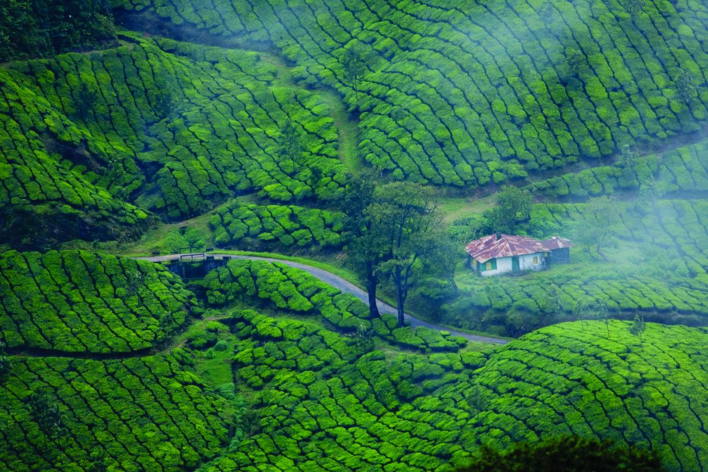

Munnar
The Queen of Hills in Kerala Munnar is a breathtaking hill station nestled in the Western Ghats, famous for its endless tea plantations, mist-covered valleys, and scenic waterfalls. Located about 1,600 meters above sea level, it enjoys a cool and pleasant climate throughout the year, making it a perfect escape from the busy city life. The town is surrounded by lush green hills, winding roads, and fresh mountain air that refresh both the body and mind. One of the major attractions of Munnar is the Eravikulam National Park, home to the endangered Nilgiri Tahr and rich biodiversity. Visitors can also explore tea museums, spice plantations, and scenic spots like Mattupetty Dam, Echo Point, and Top Station, which offer stunning panoramic views. The early morning mist, chirping birds, and peaceful surroundings make Munnar a favorite destination for nature lovers, honeymooners, photographers, and adventure enthusiasts. Trekking, camping, and wildlife spotting are some of the popular activities enjoyed by tourists visiting this beautiful hill station.

Munnar Misty Hills
